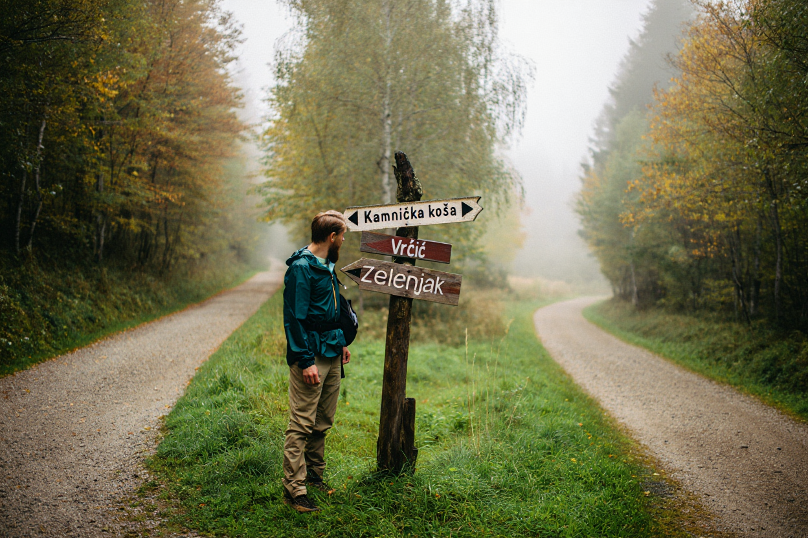

Vikend pobeg v Sloveniji z malo prtljage: kako spakirati manj in doživeti več

Kratek vikend pobeg je pogosto najbolj hvaležna oblika oddiha, a ljudje ga radi zapletejo s preveč prtljage, preveč rezervnimi scenariji in preveč nepotrebne opreme. Za dva dni ne potrebujete občutka, kot da se selite. Potrebujete predvsem jasen namen, nekaj osnovnih kosov oblačil in pripravljenost, da določene stvari preprosto ne bodo popolne. Manj ko nesete s sabo, lažje se premikate, hitreje se namestite in manj časa izgubite z odločanjem, kaj boste oblekli, vzeli ali pustili v avtu.
Dobro pravilo za takšen pobeg je, da vse, kar vzamete, upraviči vsaj dve uporabi. To velja za oblačila, obutev in dodatke. Če nečesa ne morete uporabiti večkrat ali v več kombinacijah, verjetno ne sodi v torbo. V hladnejšem delu leta se najbolj obnese plastenje. Spomladi in poleti pa je smiselno staviti na lahke materiale, eno rezervno zgornjo plast in dobro obutev. Posebej pri izletih po Sloveniji je menjava vremena hitra, zato je bolj pametno imeti eno uporabno jakno kot tri “za vsak slučaj”.
Poleg prtljage pa je pomembna tudi struktura vikenda. Če že vnaprej veste, da odhajate samo za kratek čas, nima smisla tlačiti v plan treh regij, dveh muzejev, ene planinske ture in pozne večerje v drugem mestu. Veliko bolj smiselno je izbrati eno osrednjo točko in okoli nje zgraditi preprost ritem. Če vam ustreza bolj mirna organizacija, si najprej oglejte prispevek o tem, kako načrtovati oddih brez stresa. Če vas zanima manj digitalnega šuma in bolj umirjen tempo, pa se lepo dopolnjuje tudi z zapisom o trajnostnem potovanju in digitalnem odklopu.
Praktična prednost majhne prtljage je tudi psihološka. Ko imate manj stvari, je manj preverjanja, manj možnosti, da kaj izgubite, in manj drobnih prekinitev dneva. To se pozna predvsem pri družinskih izletih in pri kratkih pobegih v naravo, kjer logistika hitro požre velik del energije. Če imate vse v eni torbi ali manjšem nahrbtniku, se potovanje začne hitreje in manj utrujajoče. Ta učinek je večji, kot si večina ljudi predstavlja, dokler ga ne preizkusi.
Na koncu gre za isto načelo kot pri vsakem dobrem oddihu: ne zmagate z več opreme, več rezervami in bolj polnim urnikom. Zmagate z manj odvečnimi stvarmi in bolj jasnim fokusom. Slovenija je za kratke pobege odlična prav zato, ker razdalje niso dolge. To pomeni, da si lahko privoščite enostavnejšo pripravo in vseeno doživite veliko. Če torba ostane lahka, ostane lažji tudi vaš tempo. Pri vikendu pa je to pogosto največ, kar zares potrebujete.